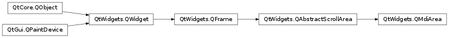

QMdiArea¶
Synopsis¶
Functions¶
- def
activationOrder() - def
activeSubWindow() - def
addSubWindow(widget[, flags=Qt.WindowFlags()]) - def
background() - def
currentSubWindow() - def
documentMode() - def
removeSubWindow(widget) - def
setActivationOrder(order) - def
setBackground(background) - def
setDocumentMode(enabled) - def
setOption(option[, on=true]) - def
setTabPosition(position) - def
setTabShape(shape) - def
setTabsClosable(closable) - def
setTabsMovable(movable) - def
setViewMode(mode) - def
subWindowList([order=CreationOrder]) - def
tabPosition() - def
tabShape() - def
tabsClosable() - def
tabsMovable() - def
testOption(opton) - def
viewMode()
Slots¶
- def
activateNextSubWindow() - def
activatePreviousSubWindow() - def
cascadeSubWindows() - def
closeActiveSubWindow() - def
closeAllSubWindows() - def
setActiveSubWindow(window) - def
tileSubWindows()
Signals¶
- def
subWindowActivated(arg__1)
Detailed Description¶
The
PySide2.QtWidgets.QMdiAreawidget provides an area in which MDI windows are displayed.
PySide2.QtWidgets.QMdiAreafunctions, essentially, like a window manager for MDI windows. For instance, it draws the windows it manages on itself and arranges them in a cascading or tile pattern.PySide2.QtWidgets.QMdiAreais commonly used as the center widget in aPySide2.QtWidgets.QMainWindowto create MDI applications, but can also be placed in any layout. The following code adds an area to a main window:mainWindow = QMainWindow() mainWindow.setCentralWidget(mdiArea)Unlike the window managers for top-level windows, all window flags (
Qt.WindowFlags) are supported byPySide2.QtWidgets.QMdiAreaas long as the flags are supported by the current widget style. If a specific flag is not supported by the style (e.g., theWindowShadeButtonHint), you can still shade the window with showShaded().Subwindows in
PySide2.QtWidgets.QMdiAreaare instances ofPySide2.QtWidgets.QMdiSubWindow. They are added to an MDI area withPySide2.QtWidgets.QMdiArea.addSubWindow(). It is common to pass aPySide2.QtWidgets.QWidget, which is set as the internal widget, to this function, but it is also possible to pass aPySide2.QtWidgets.QMdiSubWindowdirectly.The class inheritsPySide2.QtWidgets.QWidget, and you can use the same API as with a normal top-level window when programming.PySide2.QtWidgets.QMdiSubWindowalso has behavior that is specific to MDI windows. See thePySide2.QtWidgets.QMdiSubWindowclass description for more details.A subwindow becomes active when it gets the keyboard focus, or when
PySide2.QtWidgets.QWidget.setFocus()is called. The user activates a window by moving focus in the usual ways. The MDI area emits thePySide2.QtWidgets.QMdiArea.subWindowActivated()signal when the active window changes, and thePySide2.QtWidgets.QMdiArea.activeSubWindow()function returns the active subwindow.The convenience function
PySide2.QtWidgets.QMdiArea.subWindowList()returns a list of all subwindows. This information could be used in a popup menu containing a list of windows, for example.The subwindows are sorted by the current
QMdiArea.WindowOrder. This is used for thePySide2.QtWidgets.QMdiArea.subWindowList()and forPySide2.QtWidgets.QMdiArea.activateNextSubWindow()andPySide2.QtWidgets.QMdiArea.activatePreviousSubWindow(). Also, it is used when cascading or tiling the windows withPySide2.QtWidgets.QMdiArea.cascadeSubWindows()andPySide2.QtWidgets.QMdiArea.tileSubWindows().
PySide2.QtWidgets.QMdiAreaprovides two built-in layout strategies for subwindows:PySide2.QtWidgets.QMdiArea.cascadeSubWindows()andPySide2.QtWidgets.QMdiArea.tileSubWindows(). Both are slots and are easily connected to menu entries.
Note
The default scroll bar property for
PySide2.QtWidgets.QMdiAreaisQt.ScrollBarAlwaysOff.See also


-
class
PySide2.QtWidgets.QMdiArea([parent=nullptr])¶ Parameters: parent – PySide2.QtWidgets.QWidgetConstructs an empty mdi area.
parentis passed toPySide2.QtWidgets.QWidget‘s constructor.
-
PySide2.QtWidgets.QMdiArea.AreaOption¶ This enum describes options that customize the behavior of the
PySide2.QtWidgets.QMdiArea.Constant Description QMdiArea.DontMaximizeSubWindowOnActivation When the active subwindow is maximized, the default behavior is to maximize the next subwindow that is activated. Set this option if you do not want this behavior.
-
PySide2.QtWidgets.QMdiArea.WindowOrder¶ Specifies the criteria to use for ordering the list of child windows returned by
PySide2.QtWidgets.QMdiArea.subWindowList(). The functionsPySide2.QtWidgets.QMdiArea.cascadeSubWindows()andPySide2.QtWidgets.QMdiArea.tileSubWindows()follow this order when arranging the windows.Constant Description QMdiArea.CreationOrder The windows are returned in the order of their creation. QMdiArea.StackingOrder The windows are returned in the order in which they are stacked, with the top-most window being last in the list. QMdiArea.ActivationHistoryOrder The windows are returned in the order in which they were activated.
-
PySide2.QtWidgets.QMdiArea.ViewMode¶ This enum describes the view mode of the area; i.e. how sub-windows will be displayed.
Constant Description QMdiArea.SubWindowView Display sub-windows with window frames (default). QMdiArea.TabbedView Display sub-windows with tabs in a tab bar.
-
PySide2.QtWidgets.QMdiArea.activateNextSubWindow()¶ Gives the keyboard focus to another window in the list of child windows. The window activated will be the next one determined by the current
activation order.See also
PySide2.QtWidgets.QMdiArea.activatePreviousSubWindow()QMdiArea.WindowOrder
-
PySide2.QtWidgets.QMdiArea.activatePreviousSubWindow()¶ Gives the keyboard focus to another window in the list of child windows. The window activated will be the previous one determined by the current
activation order.See also
PySide2.QtWidgets.QMdiArea.activateNextSubWindow()QMdiArea.WindowOrder
-
PySide2.QtWidgets.QMdiArea.activationOrder()¶ Return type: PySide2.QtWidgets.QMdiArea.WindowOrder
-
PySide2.QtWidgets.QMdiArea.activeSubWindow()¶ Return type: PySide2.QtWidgets.QMdiSubWindowReturns a pointer to the current active subwindow. If no window is currently active, 0 is returned.
Subwindows are treated as top-level windows with respect to window state, i.e., if a widget outside the MDI area is the active window, no subwindow will be active. Note that if a widget in the window in which the MDI area lives gains focus, the window will be activated.
See also
PySide2.QtWidgets.QMdiArea.setActiveSubWindow()Qt.WindowState
-
PySide2.QtWidgets.QMdiArea.addSubWindow(widget[, flags=Qt.WindowFlags()])¶ Parameters: - widget –
PySide2.QtWidgets.QWidget - flags –
PySide2.QtCore.Qt.WindowFlags
Return type: Adds
widgetas a new subwindow to the MDI area. IfwindowFlagsare non-zero, they will override the flags set on the widget.The
widgetcan be either aPySide2.QtWidgets.QMdiSubWindowor anotherPySide2.QtWidgets.QWidget(in which case the MDI area will create a subwindow and set thewidgetas the internal widget).Note
Once the subwindow has been added, its parent will be the viewport widget of the
PySide2.QtWidgets.QMdiArea.mdiArea = QMdiArea() subWindow1 = QMdiSubWindow() subWindow1.setWidget(internalWidget1) subWindow1.setAttribute(Qt.WA_DeleteOnClose) mdiArea.addSubWindow(subWindow1) subWindow2 = QMdiSubWindow() mdiArea.addSubWindow(internalWidget2)
When you create your own subwindow, you must set the
Qt.WA_DeleteOnClosewidget attribute if you want the window to be deleted when closed in the MDI area. If not, the window will be hidden and the MDI area will not activate the next subwindow.Returns the
PySide2.QtWidgets.QMdiSubWindowthat is added to the MDI area.- widget –
-
PySide2.QtWidgets.QMdiArea.background()¶ Return type: PySide2.QtGui.QBrush
-
PySide2.QtWidgets.QMdiArea.cascadeSubWindows()¶ Arranges all the child windows in a cascade pattern.
-
PySide2.QtWidgets.QMdiArea.closeActiveSubWindow()¶ Closes the active subwindow.
-
PySide2.QtWidgets.QMdiArea.closeAllSubWindows()¶ Closes all subwindows by sending a
PySide2.QtGui.QCloseEventto each window. You may receivePySide2.QtWidgets.QMdiArea.subWindowActivated()signals from subwindows before they are closed (if the MDI area activates the subwindow when another is closing).Subwindows that ignore the close event will remain open.
-
PySide2.QtWidgets.QMdiArea.currentSubWindow()¶ Return type: PySide2.QtWidgets.QMdiSubWindowReturns a pointer to the current subwindow, or 0 if there is no current subwindow.
This function will return the same as
PySide2.QtWidgets.QMdiArea.activeSubWindow()if thePySide2.QtWidgets.QApplicationcontainingPySide2.QtWidgets.QMdiAreais active.
-
PySide2.QtWidgets.QMdiArea.documentMode()¶ Return type: PySide2.QtCore.bool
-
PySide2.QtWidgets.QMdiArea.removeSubWindow(widget)¶ Parameters: widget – PySide2.QtWidgets.QWidgetRemoves
widgetfrom the MDI area. Thewidgetmust be either aPySide2.QtWidgets.QMdiSubWindowor a widget that is the internal widget of a subwindow. Notewidgetis never actually deleted byPySide2.QtWidgets.QMdiArea. If aPySide2.QtWidgets.QMdiSubWindowis passed in its parent is set to 0 and it is removed, but if an internal widget is passed in the child widget is set to 0 but thePySide2.QtWidgets.QMdiSubWindowis not removed.
-
PySide2.QtWidgets.QMdiArea.setActivationOrder(order)¶ Parameters: order – PySide2.QtWidgets.QMdiArea.WindowOrder
-
PySide2.QtWidgets.QMdiArea.setActiveSubWindow(window)¶ Parameters: window – PySide2.QtWidgets.QMdiSubWindowActivates the subwindow
window. Ifwindowis 0, any current active window is deactivated.
-
PySide2.QtWidgets.QMdiArea.setBackground(background)¶ Parameters: background – PySide2.QtGui.QBrush
-
PySide2.QtWidgets.QMdiArea.setDocumentMode(enabled)¶ Parameters: enabled – PySide2.QtCore.bool
-
PySide2.QtWidgets.QMdiArea.setOption(option[, on=true])¶ Parameters: - option –
PySide2.QtWidgets.QMdiArea.AreaOption - on –
PySide2.QtCore.bool
If
onis true,optionis enabled on the MDI area; otherwise it is disabled. SeeQMdiArea.AreaOptionfor the effect of each option.See also
QMdiArea.AreaOptionPySide2.QtWidgets.QMdiArea.testOption()- option –
-
PySide2.QtWidgets.QMdiArea.setTabPosition(position)¶ Parameters: position – PySide2.QtWidgets.QTabWidget.TabPosition
-
PySide2.QtWidgets.QMdiArea.setTabShape(shape)¶ Parameters: shape – PySide2.QtWidgets.QTabWidget.TabShape
-
PySide2.QtWidgets.QMdiArea.setTabsClosable(closable)¶ Parameters: closable – PySide2.QtCore.bool
-
PySide2.QtWidgets.QMdiArea.setTabsMovable(movable)¶ Parameters: movable – PySide2.QtCore.bool
-
PySide2.QtWidgets.QMdiArea.setViewMode(mode)¶ Parameters: mode – PySide2.QtWidgets.QMdiArea.ViewMode
-
PySide2.QtWidgets.QMdiArea.subWindowActivated(arg__1)¶ Parameters: arg__1 – PySide2.QtWidgets.QMdiSubWindow
-
PySide2.QtWidgets.QMdiArea.subWindowList([order=CreationOrder])¶ Parameters: order – PySide2.QtWidgets.QMdiArea.WindowOrderReturn type: Returns a list of all subwindows in the MDI area. If
orderisCreationOrder(the default), the windows are sorted in the order in which they were inserted into the workspace. IforderisStackingOrder, the windows are listed in their stacking order, with the topmost window as the last item in the list. IforderisActivationHistoryOrder, the windows are listed according to their recent activation history.See also
QMdiArea.WindowOrder
-
PySide2.QtWidgets.QMdiArea.tabPosition()¶ Return type: PySide2.QtWidgets.QTabWidget.TabPosition
-
PySide2.QtWidgets.QMdiArea.tabShape()¶ Return type: PySide2.QtWidgets.QTabWidget.TabShape
-
PySide2.QtWidgets.QMdiArea.tabsClosable()¶ Return type: PySide2.QtCore.bool
-
PySide2.QtWidgets.QMdiArea.tabsMovable()¶ Return type: PySide2.QtCore.bool
-
PySide2.QtWidgets.QMdiArea.testOption(opton)¶ Parameters: opton – PySide2.QtWidgets.QMdiArea.AreaOptionReturn type: PySide2.QtCore.boolReturns
trueifoptionis enabled; otherwise returnsfalse.See also
QMdiArea.AreaOptionPySide2.QtWidgets.QMdiArea.setOption()
-
PySide2.QtWidgets.QMdiArea.tileSubWindows()¶ Arranges all child windows in a tile pattern.
-
PySide2.QtWidgets.QMdiArea.viewMode()¶ Return type: PySide2.QtWidgets.QMdiArea.ViewMode
© 2018 The Qt Company Ltd. Documentation contributions included herein are the copyrights of their respective owners. The documentation provided herein is licensed under the terms of the GNU Free Documentation License version 1.3 as published by the Free Software Foundation. Qt and respective logos are trademarks of The Qt Company Ltd. in Finland and/or other countries worldwide. All other trademarks are property of their respective owners.